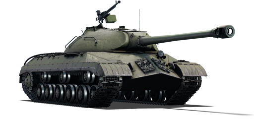
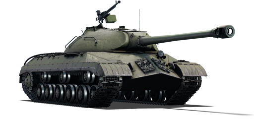

O IS-3 é a terceira variante da família de tanques pesados IS. O IS-3 apresentava um design revolucionário da parte frontal do casco e da torre, que se tornaria a marca registrada de todos os tanques soviéticos do pós-guerra até os dias atuais. Como o IS-3 diferia dos modelos anteriores em muitos aspectos, foi necessário um reprocessamento completo pela primeira vez. Isso levou tempo, e os três primeiros IS-3 saíram da fábrica em maio de 1945, prontos para entrar em serviço na Alemanha sob um Batalhão Independente da Guarda. No entanto, quando chegaram, o tratado de paz já havia sido assinado.
Muitos outros IS-3 já estavam prontos na época da invasão da Manchúria em agosto, mas há poucas evidências de que tenham participado desses eventos. No fim, o IS-3 teve pouca ação, além de ter sido estacionado em várias frentes durante a Guerra Fria. Devido a uma série de dificuldades, a produção foi interrompida, e ele foi substituído pelo IS-4, pelos protótipos IS-6 e IS-7, e, finalmente, pelo IS-8 (renomeado para T-10 após a morte de Stalin).
Por causa da falta de mobilidade, os russos chegaram à mesma conclusão que seus equivalentes ocidentais sobre tanques pesados. Após o lançamento da primeira família de MBTs (Main Battle Tanks, ou Tanques de Batalha Principais) em 1953, essa classe de tanques pesados também foi abandonada, de forma semelhante ao que aconteceu no Ocidente. Inadvertidamente, o IS-3 acabou se tornando um design de tanque influente devido à sua aparição na Parada da Vitória de 1945 em Berlim, que surpreendeu os Aliados Ocidentais e os levou a desenvolver vários projetos de tanques para enfrentá-lo diretamente, como o americano M103 e o britânico FV4005.